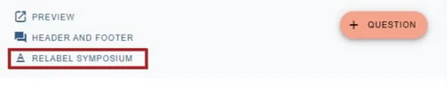
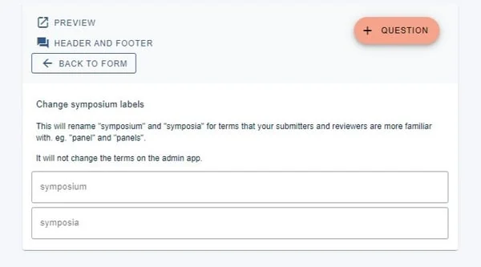
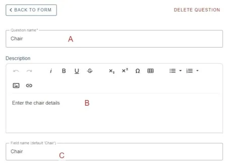
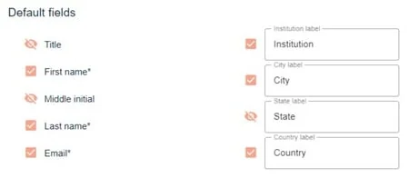
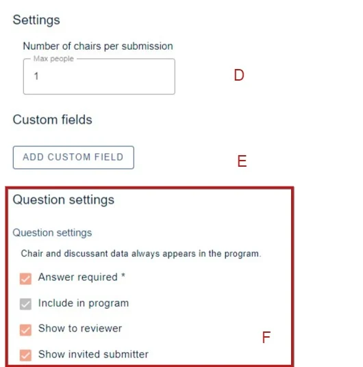
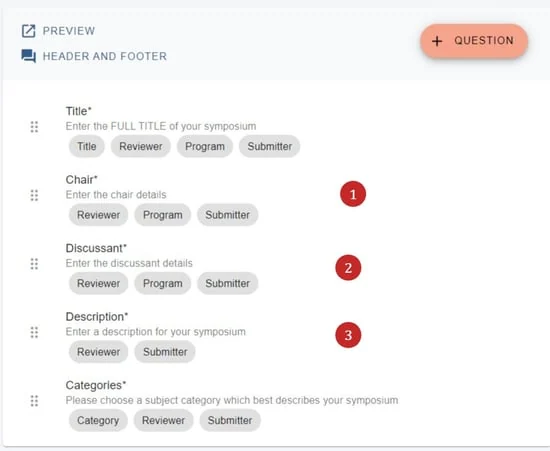
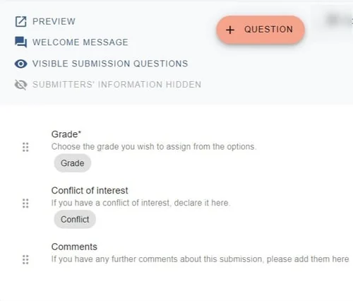

Designing the Symposia forms
Symposia have two forms of their own: the submission form people fill in to propose a symposium, and the review form your reviewers score them with. Both work like their abstract equivalents, with different default questions.
This guide is for event administrators.
It helps to read the abstract guidance first, since the question types and tags are the same: Designing the submission form, Question types and Question setting tags.
The symposium submission form#
Go to Event dashboard → Symposium → Submissions → Form & Setup**.
At the top you will find Preview and Header and Footer, as on the abstract form, plus an option to relabel the word "Symposium".

Click it, enter your singular and plural terms, then click Back to form. Changes save automatically.

The default questions#
1. Chair. Works like the authors and affiliations question on the abstract form. At the top you can set:
- A the name of the question
- B the text submitters see (you can overwrite the default "Enter the chair details")
- C a replacement term — entering "Convenor", for example, replaces "Chair" throughout the system for this symposium

The next part covers the chair's own details, and matches the author and affiliation fields on the abstract form.

Finally:
- D the maximum number of chairs per symposium
- E custom author fields, as on the abstract form
- F question settings, as on the abstract form — hover over a tag for more detail

2. Discussant. Set up exactly as the Chair question above.
3. Description. The description of the symposium. It behaves like the abstract question and is a text editor type question.

The symposium review form#
Go to Event dashboard → Symposium → Reviews → Form & Setup**. The default symposia review form appears.

It works the same way as the abstract review form, so for question types and settings see:
Once both forms are ready, move on to Collecting symposia.
Did this page solve it?
Thanks — this helps us fix it.
Didn't solve it? Ask our support team
No question is too small, and there's no charge for asking. Raise a ticket and someone who knows the software will pick it up.